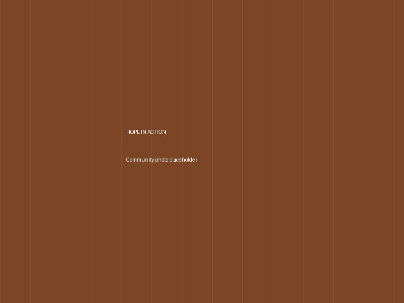

Why youth-led
We are close enough to notice.
A young person walking the same path to school sees the child without a raincoat, the sibling sharing one exercise book, the quiet student who has never owned a new pencil.
That proximity is our advantage. We do not need a big office or a long approval chain to respond. Adults and institutions are welcome partners — but the voice of the young leader stays at the centre.
0Children supported
0Kits given
0Volunteers
0Communities
Team Leader
Coordinates drives and speaks for the team
Logistics Lead
Tracks supplies, storage and deliveries
Community Liaison
Talks with families and partner schools
Communications Lead
Stories, social media and donor updatesTeam names and photos are placeholders — replace with real, consented details.